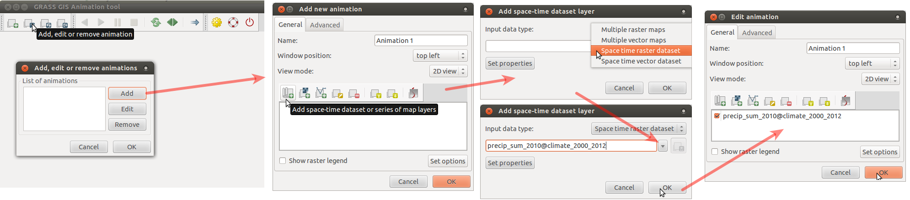
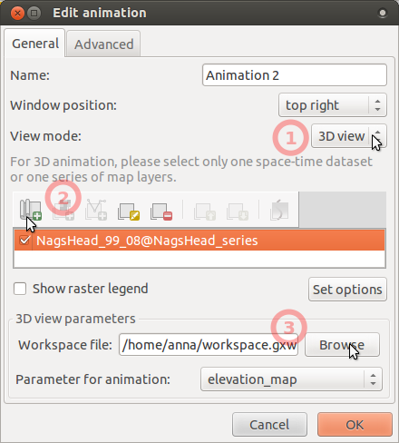

Spatio-temporal data handling and visualization in GRASS GIS
FOSS4G 2014 workshop
Vaclav Petras, Anna Petrasova, Helena Mitasova, Markus Neteler


Workshop URL:
Outline:
- Quick introduction to GRASS GIS and GRASS Temporal Framework
- Climate data analysis: analyze and visualize North Carolina temperature and precipitation time series
- Terrain time series visualization: process Nags Head coastal terrain time series and visualize space-time cube
- Visualization of solar radiation: compute and visualize solar radiation dynamics using NC State Centennial Campus lidar data
Software:
- GRASS GIS 7 (includes GRASS GIS Temporal Framework [1])
- matplotlib with pyplot (included in GRASS installation for MS Windows; package python-matplotlib for Ubuntu)
Data:
- location NC_spm_temporal workshop
- mapset
climate_2000_2012: temperature and precipitation series for the whole North Carolina [2] - mapset
NagsHead_series: elevation data time series, derived from lidar data - mapset
centennial: DEM of part of Centennial campus, NC State University, derived from lidar data
- mapset
Terminology:
- map in GRASS describes a spatial phenomenon, map is stored in GRASS database, it can be raster, vector, or 3D raster (other GIS systems often call this a layer)
- 3D raster is a three dimensional raster, alternative names include voxel, voxel model and volume
- spatio-temporal dataset in GRASS is a set of GRASS maps registered in GRASS temporal database
- GRASS module is one function, procedure or algorithm, it can be also referred as command especially when also all parameters are given (other systems use also terms tool and program), module can be invoked from GUI, Python or system command line
- GUI is a graphical user interface, i.e. the windows which user usually sees after starting GRASS GIS (GUI in GRASS GIS is often referred as wxGUI because of the underlying technology)
Notes:
- To run commands in GUI, fill the module parameters into a proper form or just type the relevant command into the command console in GUI and press enter.
Climate data analysis
Basic commands and visualizations
Start GRASS with location NC_spm_temporal_workshop and mapset climate_2000_2012. First we list available raster maps and display the first temperature and precipitation maps from the series to make ourselves familiar with the data.
g.list type=raster
g.list type=raster pattern="*tempmean"
g.list type=raster pattern="*precip"
To better handle the long time series of maps, we create temporal datasets which serve as containers for the time series and we will further manipulate them instead of the individual maps. First, we create empty datasets of type strds (space-time raster dataset). Note, that we use absolute time.In Layer Manager menu: File -> Map display -> Add raster (also available on toolbar) Select raster map '2000_01_tempmean' Display legend
# start monitor d.mon wx0 # display raster maps d.rast 2000_01_tempmean d.legend 2000_01_tempmean
t.create output=tempmean type=strds temporaltype=absolute title="Average temperature" description="Monthly temperature average in NC [deg C]"
t.create output=precip_sum type=strds temporaltype=absolute title="Preciptation" description="Monthly precipitation sums in NC [mm]"
Now we register raster maps into yet empty space-time raster datasets with start date 2000-01-01 and interval time with increment 1 month. We use g.list again to list separately temperature and precipitation maps. Note that g.list lists maps alphabetically which in this case orders the maps chronologically which is what we need.
First click on Clear button under Output window label at the bottom of Layer Manager List temperature raster maps with g.list: g.list type=raster pattern="*tempmean" --quiet Then launch t.register and copy and paste output of g.list to file parameter of t.register (input field under 'or enter values interactively'). In t.register dialog, set additional values: tab Input > input > tempmean tab Time Date > start > 2000-01-01 > increment > 1 months > check i flag Do the same for precipitation, first click on Clear button again to clear the previous list to simplify copying: g.list type=raster pattern="*precip" --quiet And than copy and paste output to the appropriate field in t.register and use parameters: tab Input > input > precip_sum tab Time Date > start > 2000-01-01 > increment > 1 months > check i flag
# first list maps to check the pattern and output g.list type=raster pattern="*tempmean" separator=comma --quiet g.list type=raster pattern="*precip" separator=comma --quiet # then use backticks to pass the maps directly to t.register t.register -i input=tempmean type=raster start=2000-01-01 increment="1 months" \ maps=`g.list type=raster pattern="*tempmean" separator=comma --quiet` t.register -i input=precip_sum type=raster start=2000-01-01 increment="1 months" \ maps=`g.list type=raster pattern="*precip" separator=comma --quiet`
Make sure the datasets are created and populated correctly:
t.list type=strds
t.rast.list input=tempmean sep=tab
Since the result of t.rast.list is easily parseable but not so easy to read by humans, we will visualize the temporal extents of the dataset:
Menu: Temporal -> GUI tools -> Timeline tool Select dataset tempmeang.gui.timeline tempmean

Now we are going to animate part of the dataset. We will first extract year 2010 from both space-time raster datasets. In this case, no new maps are created, the newly created dataset just points to the old maps.
t.rast.extract input=tempmean output=tempmean_2010 where="start_time >= '2010-01-01' and start_time < '2011-01-01'"
t.rast.extract input=precip_sum output=precip_sum_2010 where="start_time >= '2010-01-01' and start_time < '2011-01-01'"
Look at the temporal extents:
Menu: Temporal -> GUI tools -> Timeline tool Select datasets tempmean, precip_sum, tempmean_2010, precip_sum_2010g.gui.timeline inputs=tempmean,precip_sum,tempmean_2010,precip_sum_2010

Create an animation of precipitation in 2010 (as in the picture) by following these steps:

- Run Animation tool (in menu find Temporal > GUI tools > Animation tool)
and add animation using these screenshot instructions for
precip_sum_2010(click on the picture to enlarge).
 - When the animation is done, we can change the time format to better suit our case: go to Settings dialog (accessible from toolbar) and choose a suitable format from the drop-down list.
- To display legend, we first have to get minimum and maximum values of the entire dataset.
We get these values by running t.info. Then, in the 'Edit animation' dialog, check legend,
set option 'rast' to one of the maps of the dataset,
and set 'range' option to the min and max values got from t.info (in the format min,max).
t.info precip_sum_2010t.info precip_sum_2010grass.read_command('t.info', input='precip_sum_2010')+-------------------- Space Time Raster Dataset -----------------------------+ | | +-------------------- Basic information -------------------------------------+ | ... +-------------------- Absolute time -----------------------------------------+ | .. +-------------------- Spatial extent ----------------------------------------+ | ... +-------------------- Metadata information --------------------------------+ | Raster register table:...... raster_map_register_89c7821c3f174f3e965f481dfbd0c8d7 | North-South resolution min:. 500.0 | North-South resolution max:. 500.0 | East-west resolution min:... 500.0 | East-west resolution max:... 500.0 | Minimum value min:.......... 6.275055 | Minimum value max:.......... 84.408674 | Maximum value min:.......... 185.205301 | Maximum value max:.......... 436.309366 | Aggregation type:........... None | Number of registered maps:.. 12 | ...
- Change color table if desired (to built-in color table precipitaton_monthly or create your own color table). Also change the color of the temperature dataset which will be used in the next step.
To see the change in the animation tool, click on Render map in the toolbar which reloads all maps.
t.rast.colors input=precip_sum_2010 color=precipitation_monthly t.rast.colors input=tempmean_2010 color=celsius - And now add a second animation with
tempmean_2010so that we can see the temperature and precipitation synchronized. Use the same screenshot instructions as before, just usetempmean_2010instead ofprecip_sum_2010.
Now we go back to the extracted dataset and look at some other options to explore data using again t.rast.list. We can for example choose which columns to print, and the order of records. In this case we print the time and monthly minimum of precipitation to get the information which months in 2010 had the highest maximum values. The default separator (pipe) can be changed with separator option.
t.rast.list input=precip_sum_2010 columns=start_time,max order=max sep=tab# we can choose different columns and order t.rast.list input=precip_sum_2010 columns=start_time,max order=max sep=tab
Here we compute univariate statistics using t.rast.univar with temporal 'where' option to limit output to last 3 months of the year 2010.
t.rast.univar input=tempmean_2010 where="start_time > '2010-10-01'"
id|start|end|mean|min|max|mean_of_abs|stddev|variance|coeff_var|sum|null_cells|cells 2010_10_tempmean@climate_2000_2012|2010-10-01 00:00:00|2010-11-01 00:00:00|16.2275459748922|9.80648888481988|19.2237726847331|16.2275459748922|1.83784116074554|3.37766013213051|11.3254410962021|8233321.31864314|503233|1010600 2010_11_tempmean@climate_2000_2012|2010-11-01 00:00:00|2010-12-01 00:00:00|10.0550104277932|3.83957968817817|13.2355732387967|10.0550104277932|1.49157983140112|2.2248103934426|14.8341947739629|5101580.47571814|503233|1010600 2010_12_tempmean@climate_2000_2012|2010-12-01 00:00:00|2011-01-01 00:00:00|0.929180131463252|-6.46433724297418|4.24769083658854|1.58153627012032|1.56125262006063|2.43750974364618|168.024752918684|471435.335760116|503233|1010600
Finally we remove these two extracted spatio-temporal datasets. Note: in this case we remove just the "container", not the actual maps, as we can see from the output of g.list. Module t.remove enables to remove the actual data, too, using appropriate flags, but we will not do that now, since we still need the data.
t.remove inputs=tempmean_2010,precip_sum_2010
t.list type=strds
g.list type=raster pattern="2010*tempmean"
Temporal aggregation
We will start by computing average temperature for each season of the year (we use term aggregation). We specify 'where' option to start aggregating the first of March 2000 because winter season 2000 is not complete.
t.rast.aggregate input=tempmean output=tempmean_seasonal base=tempmean_seasonal granularity="3 months" method=average where="start_time >= '2000-03-01' and start_time < '2012-11-01'"
Extract summer periods and convert to degrees Fahrenheit. SQLite function strftime('%m', start_time) returns the month of the map start timestamp. Note that strftime function is not a GRASS function. It is specific to SQLite (temporal database) backend, you need to use something different if you are using PostgreSQL backend. Using nprocs=4 we are telling t.rast.extract to use 4 processes which will be distributed to 4 processor cores if available.
t.rast.extract input=tempmean_seasonal where="strftime('%m', start_time)='06'" expression="(tempmean_seasonal * 9.0/5.0) + 32" output=tempmean_F_summer base=tempmean_F_summer nprocs=4

Now we will display an animation of summer temperatures in North Carolina and we will overlay static vector map of counties' boundaries and semi-transparent shaded relief. Before we display the maps, we set color table of the entire time series.
t.rast.colors input=tempmean_F_summer color=fahrenheit

Let's do the same aggregation with precipitation dataset in a different way. Aggregate data using time intervals of tempmean_F_summer. Convert millimeters to inches. The result will be mean of summer monthly precipitation in inches.
t.rast.aggregate.ds input=precip_sum sample=tempmean_F_summer output=precip_summer base=precip_summer method=average
t.rast.mapcalc inputs=precip_summer expression="precip_summer / 25.4" output=precip_inch_summer base=precip_inch_summer nprocs=4
Is precipitation and temperature correlated?
We will use r.regression.series, which is a GRASS addon. If you don't have it installed, use g.extension to download it from GRASS Addons:
g.extension extension=r.regression.series
Now we determine the correlation. Note that r.regression.series does not accept spatio-temporal datasets yet, just individual maps:
Run g.list two times: g.list type=raster pattern="tempmean_F_summer*" separator=comma --q g.list type=raster pattern="precip_inch_summer*" separator=comma --q and then use the outputs as inputs to xseries and yseries parameters of the r.regression.series module instead of the dots: r.regression.series xseries=... yseries=... output=corr method=corcoef# using backticks syntax for two g.list runs r.regression.series \ xseries=`g.list type=raster pattern="tempmean_F_summer*" separator=comma --q` \ yseries=`g.list type=raster pattern="precip_inch_summer*" separator=comma --q` \ output=corr method=corcoef
Set color table of corr raster map to differences color table.
r.colors map=corr color=differences
Now we can explore the map corr showing mostly negative
spatial correlation between temperature and precipitation during summer.
Add raster map layer -> select corr Add map elements -> Show/hide legend# display raster maps d.rast corr d.legend corr

Plot min/max values of summer temperature and precipitation
Show plot of min and max values of summer periods. We will first create a file with those values. To simplify things, paste the following command into terminal (not the GUI command console, that wouldn't work).
# this will create file in the current directory t.rast.list input=tempmean_F_summer columns=start_time,min,max separator=comma > temperatures.txtRun t.rast.list with following parameters: tab Required > input > tempmean_F_summer tab Formatting > separator > comma tab Selection > columns > start_time,min,max Copy output to a file named temperatures.txt. Note that you will need full path to the file in the next step. Note that some editors add txt extension even when you specify it resulting in two txt extensions which may not be visible in some file browsers (this is mainly problem on MS Windows).
Now go to Python shell tab in the wxGUI and copy and paste and execute (row by row):
# remember to use the full path to the file if necessary
import matplotlib.pyplot as plt
plt.plotfile("temperatures.txt", cols=(0,1,2), delimiter=',', subplots=False)
plt.show()

Plot temperatures in Raleigh and Ashville
Now we will plot temperatures in Raleigh and Ashville. You can find vector map towns in mapset PERMANENT. It contains 2 points representing Raleigh and Ashville. Using t.vect.observe.strds, we create a space-time vector dataset with values of summer temperature in those two locations stored in the attribute tables:
t.vect.observe.strds input=towns strds=tempmean_F_summer output=towns_tempmean_summer vector_output=towns_summer column=tempmean
Now we list temperature values:
Run t.vect.db.select and get values for Raleigh. Save the result into a text file and name it raleigh.txt: t.vect.db.select input=towns_tempmean_summer columns=tempmean separator=comma where="cat = 1" Then get values for Asheville and again save the result into file asheville.txt: t.vect.db.select input=towns_tempmean_summer columns=tempmean separator=comma where="cat = 2"t.vect.db.select input=towns_tempmean_summer columns=tempmean separator=comma where="cat = 1" > raleigh.txt t.vect.db.select input=towns_tempmean_summer columns=tempmean separator=comma where="cat = 2" > asheville.txt
Plot the values using matplotlib in GUI in Python console (note that this is just basic plotting to avoid more complicated code):
import matplotlib.pyplot as plt
plt.plotfile("raleigh.txt", cols=(0,2), delimiter=',', subplots=False)
plt.plotfile("asheville.txt", cols=(0,2), delimiter=',', subplots=False, newfig=False)
plt.show()

Terrain time series visualization
Start grass7 with location NC_spm_temporal_workshop and mapset NaghHead_series.Time series registration and visualization
First, we create an empty space-time raster dataset. We will use relative time with years as units.
t.create output=NagsHead_99_08 type=strds temporaltype=relative title="Nags Head elevation series" description="from 1999 to 2008 with gaps"
Register maps in the dataset using the list of maps bellow. Each map has an associated year. The default separator is a pipe.
In t.register dialog, use an interactive input box for the file option and copy and paste the list of the maps: NH_1999_1m|1999 NH_2001_1m|2001 NH_2004_1m|2004 NH_2005_1m|2005 NH_2007_1m|2007 NH_2008_1m|2008 Also, use the other options bellow: tab Input > input > NagsHead_99_08 tab Time Date > unit > yearsecho "NH_1999_1m|1999 NH_2001_1m|2001 NH_2004_1m|2004 NH_2005_1m|2005 NH_2007_1m|2007 NH_2008_1m|2008" > NH.txt t.register input=NagsHead_99_08 type=raster file=NH.txt unit=years
By displaying temporal extents of the newly created dataset with Timeline tool, we can see that each map is registered as an instance (not interval) and there are time gaps in the dataset.

Since there are gaps in the dataset, we decided to interpolate missing data. The interpolated maps are already in the mapset so we will skip this step now. (The maps were linearly interpolated with r.series.interp. For interval data, you could use t.rast.gapfill.)
We still have to register interpolated maps to the existing dataset.
Use interactive input for the file option in the dialog of t.register module. Use parameters input > NagsHead_99_08 and unit > years. Here is the list of maps to be registered including the time stamps: NH_2000_1m_interp|2000 NH_2002_1m_interp|2002 NH_2003_1m_interp|2003 NH_2006_1m_interp|2006echo "NH_2000_1m_interp|2000 NH_2002_1m_interp|2002 NH_2003_1m_interp|2003 NH_2006_1m_interp|2006" > interp.txt t.register input=NagsHead_99_08 file=interp.txt unit=years
Check what you have now in NagsHead_99_08 dataset. Set the same color table for all maps (copy the color table from map NH_1999_1m).
t.rast.list input=NagsHead_99_08
t.rast.colors input=NagsHead_99_08 raster=NH_1999_1m
Display animation of space-time raster data set NagsHead_99_08, first just in 2D. Use the same steps as here, but use NagsHead_99_08 dataset.
In main menu find Temporal > GUI tools > Animation tool.g.gui.animation strds=NagsHead_99_08
After displaying 2D animation, we will display 2D and 3D animation side by side. Note that 3D in Animation tool (as well as m.nviz.image command bellow) is currently not supported on MS Windows.
- To display animation in 3D, we first have to prepare and store 3D view parameters. To do that, launch GUI if not already launched, add e.g. NH_1999_1m, go to 3D view, set view as desired and fine resolution set to 1 (see GUI manual).
- Save workspace file (in menu File -> Workspace -> Save).
- In Animation tool, add another animation, choose 3D mode, set workspace file,
and leave there elevation_map as the parameter to animate.
 - The result can look like this, click on picture to show animation:


{kind=link}
Sidenote: for scripting or working in command line, you can save your 3D settings as m.nviz.image command using the button on GIS Layer manager (second row) called 'Generate command for m.nviz.image'. Here is an example of a saved command:
m.nviz.image elevation_map=NH_1999_1m -a mode=fine resolution_fine=1 color_map=NH_1999_1m position=0.94,0.87 height=789 perspective=15 twist=0 zexag=2.000000 focus=487,469,8 light_position=0.68,-0.68,0.80 light_brightness=80 light_ambient=20 light_color=255:255:255 output=nviz_output format=ppm size=718,699
Space-time cube representation
Space-time cube is 3-dimensional representation where z-coordinate is time. We use 3D raster to represent space-time cube with z-coordinates as values of the 3D raster to explore the evolution of terrain in time [3, 4, 5].
To create space-time cube we vertically stack the series of digital elevation models using t.rast.to.rast3:
t.rast.to.rast3 input=NagsHead_99_08 output=NagsHead_99_08 r3.info -g map=NagsHead_99_08 g.region raster_3d=NagsHead_99_08 -p3# convert strds to 3D raster t.rast.to.rast3 input=NagsHead_99_08 output=NagsHead_99_08 # check 3D extent and min and max values r3.info -g map=NagsHead_99_08 # set region to this 3D raster for further processing g.region raster_3d=NagsHead_99_08 -p3
Now, create a new 3D raster which will be used for coloring isosurfaces by years. Using t.rast.mapcalc we create a series of single-value raster maps for each year and then we stack them into a 3D raster and set a suitable color table.
t.rast.mapcalc inputs=NagsHead_99_08 expression="start_time() + 1999" output=NagsHead_years basename=NagsHead_years nprocs=4
t.rast.to.rast3 input=NagsHead_years output=NagsHead_years
Now set the color tables of the space-time cube 3D raster and the second 3D raster.
r3.colors map=NagsHead_99_08 color=elevation
r3.colors map=NagsHead_years color=bcyr
Now we will display the space-time cube in 3D. Follow the instructions below:
- Remove all maps in Layer Manager.
- Add 2008 digital elevation model (NH_2008_1m_0.05) which was divided by 20 for visualization purpose in 3D view because we have to use big exaggeration for the 3D raster (Add raster map layer -> select NH_2008_1m_0.05)
- Add NagsHead_99_08 3D raster from toolbar (Add various raster map layers -> Add 3D raster map layer -> select NagsHead_99_08).
- Right click on 3D raster -> Zoom to selected map.
- Paste d.legend command into GUI Command console:
d.legend -f rast3d=NagsHead_years at=5,50,7,10 use=1999,2000,2001,2002,2003,2004,2005,2006,2007,2008 - Set lower resolution to speed up 3D rendering:
g.region -p3 res3=3 tbres=1 - Switch to 3D view (be patient).
- On View page, set z-exaggeration to 20 and view height to 100.
- On Data page -> Surface, lower fine mode resolution to 1.
- On Data page -> Volume, add isosurface and then change its value to 11 or similar and change the color to use NagsHead_years.
- Set the isosurface resolution to 1.
- You can toggle normal direction of isosurface or change light on Appearance page -> Light to get better result.

Visualization of solar radiation
Start GRASS with location NC_spm_temporal_workshop and mapset centennial.
We will compute solar radiation during a day for a part of North Carolina State University Centennial Campus. Then we will visualize the change of solar radiation as a 3D animation. If you don't have r.sun.hourly, download it:
g.extension extension=r.sun.hourly
Convert the today's date (or any other date) to day of year by running this command in Python shell tab in GUI.
from datetime import datetime
datetime.now().timetuple().tm_yday
# or for an arbitrary day:
datetime.datetime(2014, 6, 21).timetuple().tm_yday
Use this number for option day.
Compute beam irradiance raster series (be patient) with the following command.
The time series is automatically registered into a space-time raster dataset.
r.sun.hourly -t elevation=elev_lid_small start_time=6 end_time=20 day=200 year=2014 beam_rad_basename=beam nprocs=4
Set custom color table for just created dataset beam:
Use interactive input box in t.rast.colors dialog or add the following line with coordinates to a newly created rules.txt file: 0% 60:60:60 70% yellow 100% 255:70:0 t.rast.colors input=beam rules=rules.txtecho "0% 60:60:60 70% yellow 100% 255:70:0" > rules.txt t.rast.colors input=beam rules=rules.txt
Finally, we animate the series in 3D. To do that, we first add elev_lid_small map in GUI,
zoom to it, and swith to 3D view.
We set desired view and resolution and then change the color by draping
over one of the solar radiation maps (see GUI manual).
We save workspace to a file.
Then we launch animation tool and add new animation. Choose 3D, add the computed space-time raster dataset,
set saved workspace file and choose color_map option to animate.
Note that 3D animation are not supported on MS Windows.

References
[1] Gebbert, S., Pebesma, E. (2014). A temporal GIS for field based environmental modeling. Environmental Modelling & Software, 53, 1–12.[2] State Climate Office of North Carolina, http://convection.meas.ncsu.edu:8080/thredds/catalog/catalog.html
[3] Mitasova, H., Harmon, R. S., Weaver, K. J., Lyons, N. J., Overton, M. F. (2012). Scientific visualization of landscapes and landforms. Geomorphology, 137(1), 122–137.
[4] Mitasova, H., Hardin, E., Starek, M. J., Harmon, R. S., Overton, M. F. (2011). Landscape dynamics from LiDAR data time series. Geomorphometry, 3–6.
[5] Starek, M.J., Mitasova H., Hardin, E., Overton, M.F., Harmon, R.S. (2011). Modeling and analysis of landscape evolution using airborne, terrestrial, and laboratory laser scanning. Geosphere, 7(6), p. 1340–1356.
Last changed: 2014-09-09 15:27
GRASS GIS manual main index | Temporal modules index | Topics index | Keywords Index | Full index

Spatio-temporal data handling and visualization in GRASS GIS workshop for FOSS4G 2014
by Vaclav Petras, Anna Petrasova, Helena Mitasova and Markus Neteler
is licensed under a Creative Commons Attribution-ShareAlike 4.0 International License.